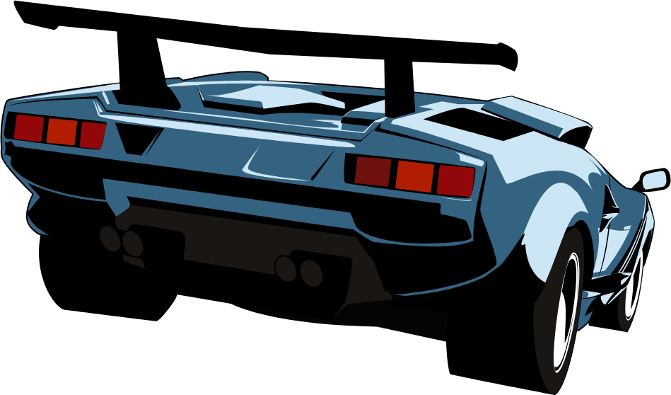
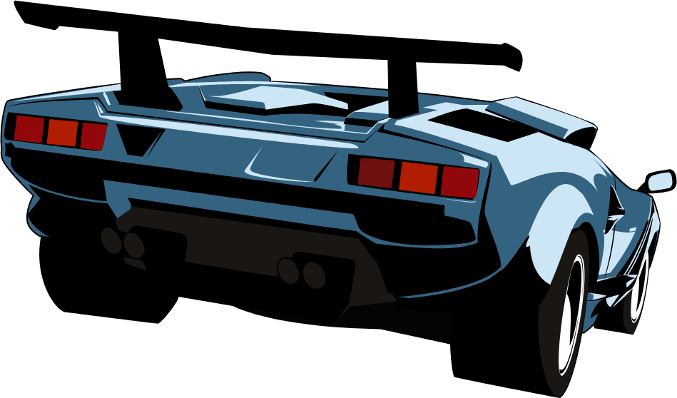

In 1970, the NFL officially absorbed the AFL, creating one league with two conferences – the NFC and the AFC.
Then, the Miami Dolphins won Super Bowl VII, finishing the 1972 season undefeated. This remains the NFL’s only perfect season, and it even gave birth to a legend. It was claimed that the ‘72 Dolphins popped champagne when the league’s last unbeaten team finally chalked up their first loss of the year, but coach Don Shula eventually admitted this was untrue.